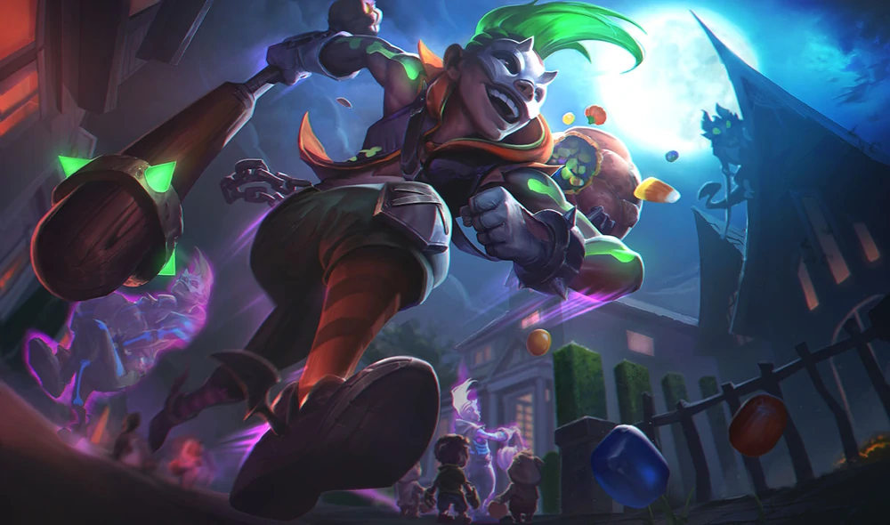
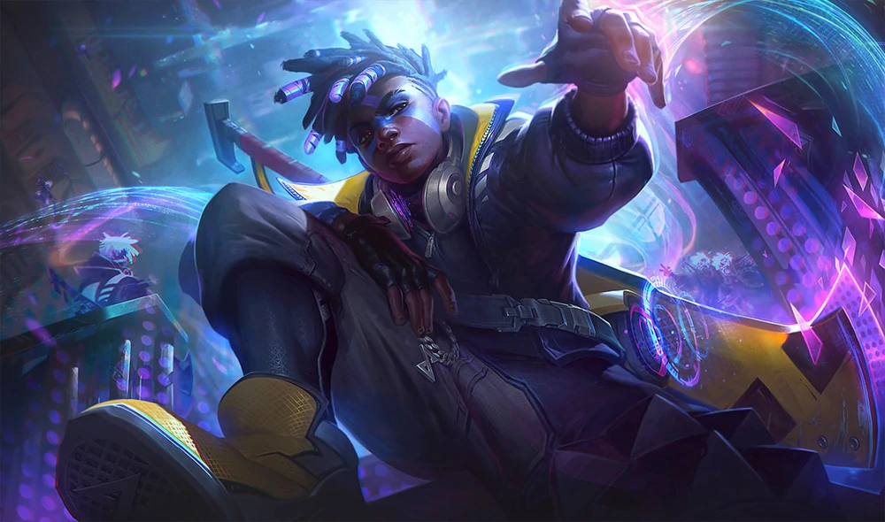

Ekko
"O Garoto que estilhaçou o Tempo"

» Quem é Ekko?
Ekko é um dos personagens do universo de League of Legends.
"Um garoto genial nascido da cidade de Zaun, uma gigante subferia escondida pela genialidade de Piltover. Desde criança inventava coisas incríveis, mesmo que fossem apenas brinquedos, seus pais vendo a inteligência de Ekko, decidiram tentar dar uma vida de verdade ao garoto fora da podridão de Zaun, então começaram a trabalhar duro para arranjarem o dinheiro para isso.
Enquanto isso, o pequeno gênio praticamente vivia com um grupo de crianças orfãs, brincando e zoando por toda Zaun.
Um dia, Ekko descobriu um recurso valioso que havia caído de Piltover até as periferias, e com muita pesquisa, conseguiu construir uma máquina do tempo para si, e como qualquer pessoas que descobrisse uma invenção dessas...Ekko usou para poder tornar suas aventuras com seu grupo ainda mais arriscadas e divertidas.
Infelizmente, um de seus amigos foi assassinado uma noite, e Ekko, mesmo voltando várias e várias vezes, nunca conseguia chegar a tempo para salvá-lo...
A partir desse dia, o garoto gênio se dedicou a ajudar quem pudesse em Zaun, sonhando um dia ver sua cidade se tornar um lugar melhor, até mesmo melhor que Piltover."
» Skills
-
» Ressonância Revo-Z
A cada golpe que Ekko acerta, sua máquina do tempo (Revo-Z) guarda uma carga, ao atingir 3 dessas cargas, a energia hextech lhe dá auxilio no próximo golpe e o deixa mais veloz.
-
» Giratempo
Ekko lança um disco que contém a energia da sua Revo-Z, ao atingir o alvo ou percorrer certa distância, o disco se expande e flutua por alguns segundos, voltando para a mão do garoto após esse tempo.
-
» Convergência Paralela
Ekko causa um paradoxo, criando um clone temporal seu que joga uma "granada" em um local. Quando essa granada explode, cria uma área em que o tempo corre mais lentamente. Caso o Ekko original entre nessa área, fará com que o tempo dentro pare de vez, afetando todos que estiverem dentro, menos Ekko.
-
» Mergulho Fásico
Ekko avança para uma direção, ligando sua Revo-Z, após isso, ele volta no tempo e acerta o alvo, como se fosse um teletransporte na visão desse mesmo alvo.
-
» Cronoquebra
Ekko sobrecarrega o Revo-Z e volta no tempo em alguns segundos.
Ao terminar a viagem, uma explosão poderosa acontece no local em que está.
» Skins
- 
- 
-

-